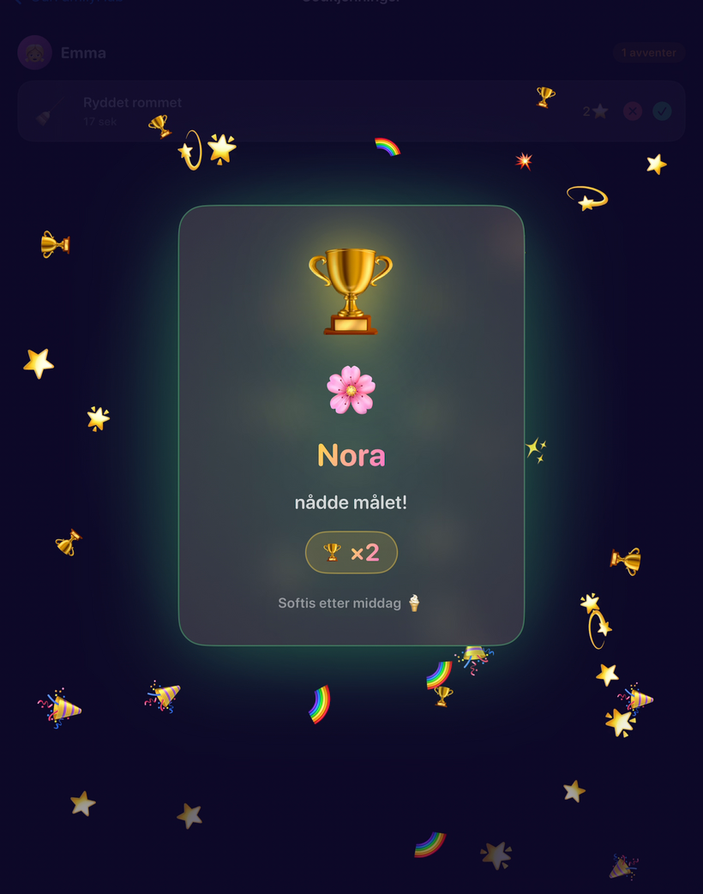

Belønningssystemer for barn kan være kraftfulle.
De kan også gå galt.
Brukt godt hjelper belønninger barn å se fremgang, bygge rutiner og føle seg stolte av innsatsen sin. Brukt dårlig kan de gjøre hverdagen til press, forhandling eller sammenligning.
Forskjellen ligger ikke bare i selve belønningen. Den ligger i tonen i systemet.
Et positivt belønningssystem bør si: «Du lærer. Innsatsen din betyr noe. Fremgang er verdt å feire.»
Det bør ikke si: «Du er slem hvis du ikke tjener nok. Søsteren din er bedre enn deg. Du betyr bare noe når du fullfører oppgaver.»
Målet er motivasjon, ikke skam.
Belønninger er ikke bestikkelser når de brukes riktig
Mange foreldre er redde for at belønninger bare er bestikkelser.
Det er forståelig. Ingen vil at hver oppgave skal bli en forhandling.
Men det er forskjell på en bestikkelse og et positivt belønningssystem.
En bestikkelse tilbys gjerne midt i en konflikt: «Hvis du slutter å skrike, får du godteri.»
Et belønningssystem er annerledes. Det er planlagt på forhånd. Det er knyttet til tydelige rutiner og forventninger. Barnet vet hva det skal gjøre, hvordan fremgang ser ut og hva det jobber mot.
Belønningen er ikke et desperat verktøy for å stoppe atferd. Den er en struktur som hjelper med å bygge vaner.
Vil du ha roligere dager som dette? Start med OurFamilyHub — det er gratis.
Last ned i App StoreFokuser på innsats, rutiner og jevnhet
De beste belønningssystemene fokuserer på gjentakbare handlinger.
For yngre barn kan det bety:
- Kle på seg
- Pusse tenner
- Pakke sekken
- Rydde lekene
- Gi kjæledyret mat
- Lese i 20 minutter
- Hjelpe til med å dekke bordet
Dette er ikke dramatiske prestasjoner. Det er hverdagsvaner. Og nettopp derfor betyr de noe.
Barn bygger selvtillit når de opplever små seire gjentatte ganger. En stjerne for å fullføre en morgenrutine handler ikke bare om oppgaven. Den handler om følelsen: «Dette får jeg til.»
Over tid blir den følelsen til selvstendighet.
Bruk ikke-materielle belønninger

Belønninger trenger ikke være leker eller penger.
Faktisk er noen av de beste belønningene enkle, relasjonelle eller opplevelsesbaserte.
- Velge familiefilmen
- Velge middag
- Ekstra godnatthistorie
- En tur alene med en forelder
- Velge musikken i bilen
- Sove i stua
- Frokostpiknik
- Ekstra tid på lekeplassen
- Velge fredagsaktiviteten
- Få være oppe 15 minutter lenger
- Velge et brettspill
- Spesiell pannekakemorgen
Ikke-materielle belønninger holder fokuset på samvær og valg, ikke bare forbruk.
De gjør også systemet lettere å holde i gang. En premie-stige fylt bare med leker kan raskt bli dyr. En premie-stige med familieopplevelser kan føles mer meningsfull.
Unngå skam og straff
Et positivt belønningssystem bør aldri bli en resultattavle for skam.
Unngå fraser som: «Søsteren din har flere stjerner enn deg. Du fullfører aldri noe. Du mistet stjernene fordi du var slem. Se hvor langt bak du ligger.»
Slike budskap kan skade motivasjonen. De gjør at systemet føles utrygt.
Fokuser i stedet på hvert barns egen fremgang. Prøv: «Du fullførte to steg helt selv i dag. Du nærmer deg belønningen din. La oss se på hva som kommer nå. I morgen er en ny dag. Det var en god innsats.»
Belønningssystemet bør hjelpe barn å reise seg igjen, ikke få dem til å føle seg fastlåst.
Feir fremgang

Feiring er ikke en liten detalj. Det er en del av hvorfor belønningssystemer virker.
Barn trenger tilbakemelding. De trenger å føle at noen la merke til innsatsen deres. En stjerne, animasjon, lyd eller liten feiring kan gjøre en fullført rutine tilfredsstillende.
Dette er spesielt nyttig for oppgaver som ikke har en åpenbar belønning i seg selv. Å pusse tenner, pakke sekken eller rydde leker føles kanskje ikke spennende. Men å fullføre steget og se fremgang kan føles godt.
Den positive tilbakemeldingen gjør at vanen blir lettere neste gang.
Hold foreldrekontrollen tydelig
Barna bør forstå systemet, men foreldrene bør styre det.
Foreldre bestemmer hvilke rutiner som betyr noe, hvilke belønninger som er tilgjengelige og når oppgaver godkjennes. Det holder belønningssystemet rettferdig og hindrer at det blir en konstant forhandling.
Med OurFamilyHub kan barna tjene stjerner og se fremgangen sin, mens foreldrene beholder kontrollen fra sin egen iPhone. Oppgaver kan kreve godkjenning, belønninger kan velges av familien, og hvert barn kan ha sin egen vei.
Den balansen hjelper systemet å holde seg positivt: barna deltar, men de voksne veileder.
OurFamilyHub gjør disse idéene om til en enkel tavle barna faktisk kan følge.
Last ned i App StoreStart enkelt
Den største feilen er å gjøre belønningssystemet for komplisert.
Start med én rutine. Legg til noen få steg. Velg én liten belønning. La barnet oppleve fremgang. For eksempel en morgenrutine med kle på seg, spise frokost, pusse tenner, pakke sekken og sko på — med en belønning der man tjener stjerner mot å velge fredagsfilmen.
Det er nok. Når systemet blir kjent, kan du legge til oppgaver, kveldsrutiner, lommepenger eller større belønningsmål.
Et positivt system føles som fremgang
De beste belønningssystemene får ikke barn til å føle seg kontrollert. De får barn til å føle seg kompetente.
De viser hva som skal gjøres nå. De feirer innsats. De gjør fremgang synlig. De hjelper foreldre å oppmuntre i stedet for å gjenta, mase eller forhandle.
Et godt belønningssystem handler ikke om perfeksjon. Det handler om å bygge små vaner, én stjerne om gangen.